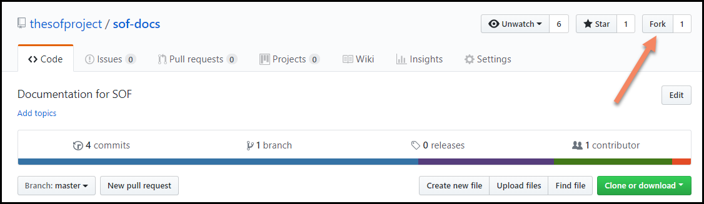

SOF Documentation Generation¶
These instructions will walk you through generating the SOF Project’s documentation and publishing it to https://thesofproject.github.io. You can also use these instructions to generate the SOF documentation on your local system.
Documentation overview¶
The SOF Project content is written using the reStructuredText markup
language (.rst file extension) with Sphinx extensions, and processed
using Sphinx to create a formatted standalone website. As a developer, you
can view this content either in its raw form as .rst markup files, or you
can generate the HTML content and view it with a web browser directly on
your workstation.
Read details about reStructuredText, and Sphinx from their respective websites.
The project’s documentation contains reStructuredText source files used to generate documentation found at the http://thesofproject.github.io website. All of the reStructuredText sources are found in the thesofproject/sof-docs repo.
The reStructuredText files are processed by the Sphinx documentation system, and make use of the breathe extension for including the doxygen-generated API material.
Set up documentation working folders¶
You must install git to set up the working folders:
For an Ubuntu development system use:
sudo apt-get install git
For a Fedora development system use:
sudo dnf install git
For a Windows development system, download and install Git manually from the https://git-scm.com/download/win website.
We use github.io for publishing the generated documentation. The recommended folder setup for documentation contributions and generation is as follows:
thesofproject/
sof/
sof-docs/
The parent thesofproject folder is present because we use the
publishing area (thesofproject.github.io) later in these steps. It’s
best if the sof-docs folder is an ssh clone of your personal fork of the
upstream project repos (although https clones also work):
Use your browser to visit https://github.com/thesofproject and do a fork of the
sof-docsrepo to your personal GitHub account.)At a command prompt, create the working folder and clone the sof-docs repository to your local computer (and if you have publishing rights, the thesofproject.github.io repo). If you don’t have publishing rights, can still generate the docs locally but not publish them:
cd ~ mkdir thesofproject && cd thesofproject git clone git@github.com:<github-username>/thesofproject/sof-docs
The documentation of the SOF source code generated by doxygen is referenced and included by the
sof-docs. Clone thesofrepository, too:git clone git@github.com:thesofproject/sof
For the cloned local repos, tell git about the upstream repo:
cd sof-docs git remote add upstream git@github.com:thesofproject/sof-docsIf you haven’t done so already, be sure to configure git with your name and email address for the signed-off-by line in your commit messages:
git config --global user.name "David Developer" git config --global user.email "david.developer@company.com"
Install documentation tools¶
Our documentation processing has been tested to run with:
Python 3.6.3
Doxygen version 1.8.13
Sphinx version 1.7.5
Breathe version 4.9.1
docutils version 0.14
sphinx_rtd_theme version 0.4.0
The SOF documentation makes use of additional Sphinx extensions used for creating drawings:
sphinxcontrib-plantuml
sphinx.ext.graphviz (included with Sphinx)
Note
The scripts/plantuml.jar extension uses Java to render the UML
drawing syntax into an image. You need to have a Java runtime environment
(JRE) installed when generating documentation.
Depending on your Linux version, install the following tools:
For Ubuntu use:
sudo apt-get install doxygen python3-pip python3-wheel make \ default-jre graphviz cmake ninja-buildFor Fedora use:
sudo dnf install doxygen python3-pip python3-wheel make \ java graphviz cmake ninja-build
For either Linux environment, install the remaining python-based tools:
cd ~/thesofproject/sof-docs
pip3 install --user -r scripts/requirements.txt
Note
The scripts/requirements.txt file hardcodes
versions using ==, which may not be compatible with your other
projects. In that case you can either setup a Python virtualenv or
try the unsupported scripts/requirements-lax.txt
(more details inside this file):
PIP_IGNORE_INSTALLED=0 pip3 install --user -r scripts/requirements-lax.txt
For Windows, install the needed tools manually:
Python (3.7+) from https://www.python.org/downloads/
Python package installer (pip) from https://pip.pypa.io/en/stable/installing/
Doxygen from http://www.doxygen.nl/download.html
GraphViz from https://graphviz.gitlab.io/
CMake (3.10+) from https://cmake.org/install/
Make - if you do not already have make, install it using MSYS2 from https://www.msys2.org/. Use the following command:
pacman -S make
Note
Make sure that installed executable files are in your path. If not, manually add the paths to the PATH variable.
For Windows, install the remaining python-based tools as previously described for Linux:
cd <path to the directory>\thesofproject\sof-docs
pip3 install --user -r scripts\requirements.txt
You are ready to generate the documentation.
Documentation presentation theme¶
Sphinx supports easy customization of the generated documentation
appearance through the use of themes. Replace the theme files and do
another make html and the output layout and style is changed.
The read-the-docs theme is installed as part of the
requirements.txt list above.
Run documentation processors¶
The sof-docs directory contains all the .rst source files, extra tools, and Makefile for generating a local copy of the SOF technical documentation.
Generate the HTML output by using the following commands:
cd thesofproject # API documentation (Doxygen) cmake -S sof/doc -B sof/doc -GNinja ninja -C sof/doc -v doc # UML and reStructuredText make -C sof-docs VERBOSE=1 html
Depending on your system, the last command may need a few minutes to run -
but only the first time. Most of the time is spent generating UML
diagrams. When done, view the HTML output with your browser, starting at
~/thesofproject/sof-docs/_build/html/index.html
If your changes are not related to any UML diagram, you can build more
than 10 times faster from scratch by temporarily changing the
plantuml_output_format line in conf.py.
Publish content¶
If you have merge rights to the thesofproject repo called
thesofproject.github.io, you can update the public project documentation
found at https://thesofproject.github.io.
You must perform a one-time clone of the upstream repo (we publish directly to the upstream repo rather than to a personal forked copy):
cd ~/thesofproject
git clone git@github.com:thesofproject/thesofproject.github.io
After you have verified that the generated HTML from make html looks
good, you can push directly to the publishing site using this command:
make publish
This will delete everything in the publishing repo’s latest folder (in case the new version has deleted files) and push a copy of the newly-generated HTML content directly to the GitHub pages publishing repo. The public site at https://thesofproject.github.io will be updated within a few minutes so it’s best to verify the locally-generated html before publishing.
Note
In some situations it is necessary to clean all the files and build from
the very beginning. To do this, use the make clean command.
Installation troubleshooting¶
In some cases, after you run make html, the documentation processors might return the following errors:
Warning: sphinx_rtd_theme missing. Use pip to install it.
Extension error:
Could not import extension breathe (exception: No module named breathe)
Makefile:36: recipe for target 'html' failed
make: *** [html] Error 1
The issue could be related to the default policy on Debian-based Linux distributions (i.e. Ubuntu) that links Python commands to Python 2.7.x. You can verify this by entering the following steps:
python --version
Python 2.7.15rc1
ll /usr/bin/python
lrwxrwxrwx 1 root root 9 sie 29 07:36 /usr/bin/python -> python2.7*
The issue can be resolved by running a dedicated environment with the Python 3.x binary and include its own set of installed Python packages. Virtualization of the Python environment is recommended as an alternative to:
adding an alias setup in ~/.bashrc
changing the symbolic link (/usr/bin/python)
modifying the default system behavior using update-alternatives
Start with installing virtualization support. As a next step, activate the virtualized environment:
apt-get install python3-venv
python3 -m venv my-sof-env
. ./my-sof-env/bin/activate
python --version
Python 3.6.7
Verify the Python version and proceed with installing all required Python packages in the virtualized environment:
pip install sphinx
git clone https://github.com/thesofproject/sof
git clone https://github.com/thesofproject/sof-docs
cd sof-docs/
pip install -r scripts/requirements.txt
After the installation is finished, you should be able to generate documentation by invoking commands listed in Running the documentation processors.
To deactivate the virtual environment and original Python environment, type:
deactivate
Further information on how to use lightweight Python virtualization environments can be found at https://docs.python.org/3/library/venv.html.
Windows troubleshooting¶
It is possible that the cmake command may not be accessible from the MSYS2 shell:
cmake -GNinja .
bash: cmake: command not found
The problem may be due to the MSYS2 PATH missing the cmake installation folder. If the cmake works correctly from the Win Command Prompt then edit the msys2_shell.cmd and check if a PATH inherit option is enabled:
set MSYS2_PATH_TYPE=inherit
Another issue that may occur is the sphinx-build command not found:
make html
make: sphinx-build: Command not found
make: *** [Makefile:36: html] Error 127
If the above error occurs both in the Win Command Prompt and in the MSYS2 shell then the python sphinx package needs to be updated:
pip install -U sphinx
Diagram compilation troubleshooting¶
If you are creating a diagram that is using the lastest features of plantuml, you may encounter the following compilation error:
WARNING: error while running plantuml
b'ERROR\n2\nSyntax Error?\nSome diagram description contains errors\n'
If you excluded syntax errors in the diagram description, one of remaining possibilities is lack of compatibility with the installed plantuml.jar version. You can verify it using the following command:
java -jar ./scripts/plantuml.jar -version
If the installed version of plantuml.jar is missing necessary features, submit a pull request to the SOF documentation repository with a new one.